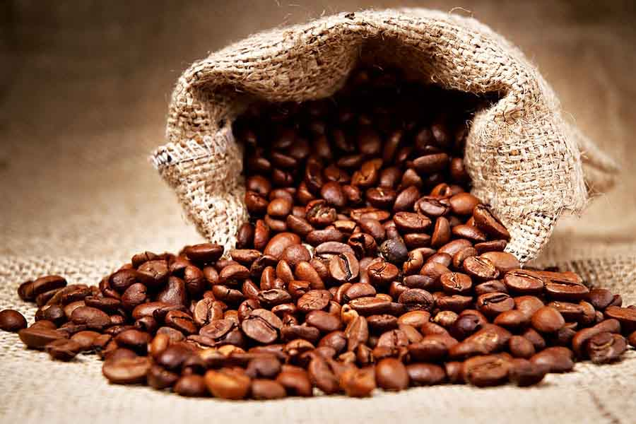

cafe sữa đá - bí mật pha ly cafe sữa đá ngon

Giới thiệu món cà phê sữa đá
Lịch sử món cafe sữa đá
Người Việt Nam bắt đầu thưởng thức cà phê vào những năm giữa thế kỷ 19. Vào thời điểm đó, sữa tươi vẫn còn là nguyên liệu khan hiếm nên sữa đặc được cho vào cafe. Lịch sử không ghi lại chính xác khi nào và ai là người đầu tiên đã sáng tạo ra món cà phê sữa đá. Tuy vậy, cà phê sữa đá là một trong những cách pha đầu tiên và phổ biến của người Việt thời bấy giờ.
Sự nổi tiếng của cafe sữa đá
Cà phê sữa đá nổi tiếng đến mức không chỉ du khách đến Việt Nam đều muốn thưởng thức mà cả các đoàn đại sứ, các nguyên thủ quốc gia, các tờ báo thế giới đều quan tâm thức uống này.
- Khi đến thăm TP. Hồ Chí Minh, Thủ tướng Canada đã thưởng thức cà phê sữa đá Việt Nam.
- Trong một chuyến công du đến Hà Nội, cựu Tổng thống Mỹ, Obama đã không quên nhắc đến món cà phê sữa đá.
- Cà phê sữa đá của Việt Nam còn được trang Bloomberg bình chọn là 1 trong 10 món cà phê độc đáo nhất thế giới.
- Bên cạnh đó, Tạp chí CN Traveler cũng bình chọn đây là thức uống đầu tiên không thể bỏ qua nếu du khách có dịp đặt chân đến Việt Nam.
Nói vậy để thấy bên cạnh các món cà phê hiện đại như Espresso, Capuchino, Latte, Pour over, Cold Brew,… thì cafe sữa đá đóng vai trò nhất định trong các quán cà phê. Vậy nên chúng ta, những tín đồ cà phê tự hào khi thưởng thức cafe sữa đá Việt Nam.
Cách pha cà phê sữa đá ngon
Chuẩn bị nguyên liệu
Để pha một ly cafe sữa đá ngon, bạn cần chuẩn bị các nguyên liệu theo công thức như sau:
- Bột cà phê nguyên chất: 25g (2-3 thìa)
- Sữa đặc: 2-3 muỗng cafe (1 sữa : 1 cà phê)
- Nước sôi: 100ml, nhiệt độ 93-95 độ C.
- Phin pha cafe
- Ly uống cafe
- Đá viên
Các bước pha cafe sữa:
- Bước 1: Tráng qua các dụng cụ pha cà phê: phin, ly, tách. Việc này làm dụng cụ nóng đều sẽ cho ly cà phê ngon hơn.
- Bước 2: Cho sữa đặc vào ly pha cafe. Thông thường, với mỗi phin cà phê, bạn nên cho khoảng 2-3 muỗng sữa đặc. Có thể điều chỉnh lượng sữa theo khẩu vị của mình. (Bạn cũng có thể cho sữa vào cà phê sau khi pha xong).
- Bước 3: Cho bột cà phê vào phin. Lắc nhẹ để mặt cà phê phẳng. Đặt phin cà phê lên ly cafe. Dùng tấm nén ép nhẹ bột cafe xuống. Nên nén vừa đủ để cà phê chảy chậm mà không bị nghẽn nước.
- Bước 4: Để nước giảm nhiệt độ giảm đến 93-95 độ C (để 1-2 phút sau khi đun sôi), rót nước vừa cao hơn mặt cà phê để ủ. Bạn có thể đặt phin lên nắp phin, rót ít nước sôi vào nắp để cà phê hấp thụ nước nóng từ bên dưới. Điều này giúp các tầng của cà phê thấm đều nước, giúp cà phê ngon hơn.
- Bước 5: Sau khoảng 1-2 phút, rót nước đến gần đầy phin rồi đậy nắp phin lại.
- Bước 6: Đợi khoảng 3-5 phút cà phê sẽ chảy xong. Khuấy đều cà phê và sữa đặc. Bạn cũng có thể cho sữa vào ở bước này rồi khuấy. Cho cà phê sữa vào ly đá đã chuẩn bị sẵn. Vậy là bạn có thể thưởng thức ly cà phê sữa đá thơm ngon do mình pha rồi đó.
Các lưu ý để pha cà phê sữa đá ngon
Các lưu ý trong quá trình pha
- Bí quyết để có ly cà phê sữa đá ngon là pha xong ly cà phê trong khoảng thời gian 5-7 phút, kể từ khi bắt đầu rót nước. Nếu nước chảy quá nhanh (thời gian pha nhanh) cà phê sẽ chua (under). Nếu nước chảy quá chậm, cà phê sẽ đắng (over). Tốc độ nhỏ giọt trung bình vào khoảng 1 giọt/giây. Tuy nhiên, đối với cafe nguyên chất, hoặc bột cafe có độ mịn vừa phải thì tốc độ nhỏ giọt sẽ nhanh hơn một chút.
- Để tránh bị cặn trong ly cà phê khi uống, bạn nên đặt nắp phin bên dưới phin trong khi ủ cà phê. Sau khi ủ xong, cho phần cà phê và cặn vào phin.
- Trước khi cho cà phê sữa vào ly đá, bạn cần cho hết nước trong ly đá ra để ly cafe sữa đá được đậm vị hơn.
- Bạn nên chọn phin nhôm, loại có lỗ nhỏ và đều để cà phê nhỏ giọt với tốc độ vừa phải. Chất liệu nhôm nhẹ cho khả năng giữ nhiệt tốt, giúp đủ nhiệt để pha cà phê, từ đó chiết xuất được cafe ngon nhất.
- Cần tráng phin và dụng cụ pha cafe trước.
- Ly cà phê thường dùng nhất là loại ly thủy tinh không có quai cầm.
Chọn cà phê để có ly cafe sữa đá ngon
Có 2 loại hạt cà phê phổ biến là Robusta và Arabica. Do hàm lượng cafein của Robusta cao nên khá đầm và đắng. Trong khi đó, hạt Arabica với hàm lượng cafein thấp nhưng thơm hơn. Vì vậy, bạn có thể phối trộn hai dòng cà phê này với nhau để tạo gu vị riêng cho mình.
Một sự thật thú vị đó là độ rang cũng quyết định đến hương vị của ly cà phê.
- Cà phê rang nhạt có vị chua, đôi khi hơi chát.
- Cafe rang vừa có màu socola có vị đắng địu, vị ngọt và chua thanh nhẹ.
- Cà phê rang nâu có vị đắng đậm, mùi thơm nồng nàn, không chua.
Nhờ đó đối với các nhà rang có kinh nghiệm, họ hiểu được gu vị thưởng thức cà phê của người Việt Nam để chọn độ rang phù hợp từ đó cho ra cà phê ngon nhất.
Dù thế nào bạn cũng nên chọn cafe nguyên chất, được mua ở những địa chỉ uy tín. Nếu bạn mua cafe để thưởng thức tại nhà, bạn nên chọn bột cafe nguyên chất sẽ không phải xay cafe khi pha.
Nguồn nước và nhiệt độ nước để pha cafe sữa đá
Khuyến khích dùng nước suối, hoặc nước từ máy lọc để cảm nhận được vị ngon của cà phê.
Pha chế cafe bằng nước sạch, đã được đun sôi. Nhiệt độ thích hợp nhất là 93-95 độ C. Không nên pha cafe bằng nước sôi 100 độ C.
Công thức pha ly cafe sữa đá đúng vị
Lượng nước cho ly cà phê sữa đúng vị có thể tùy chỉnh theo nhu cầu của bạn. Thường thì lượng nước gấp 4-5 lần cafe. Theo công thức này, bạn sẽ pha được ly cafe sữa đá ngon. Ví dụ:
- Cà phê: 25 g (3 thìa).
- Nước sôi: 80-100ml.
Trên đây là toàn bộ cách pha cafe sữa đá thơm ngon đậm chất Sài Gòn. Mỗi ngày một ly cafe nâu đá giúp làm việc tốt hơn.